These are the measurements that need nothing plugged in: the WM8960 codec on its jumpers to the
Core host, its left input shorted at the pin so the converter sees silence, and
namchaind on the Core. Nothing else is attached — no board 1, no jacks, no output
fixture, no interface. Every capture is of the codec's own silence, so all of the noise below is the pedal's.
How to read it. Each capture shows a spectrum in dBFS per 0.73 Hz bin, and the same noise as octave-band bars. Hum is a spike at 50 Hz and its harmonics; hiss is a broad slope across the high bands. The captures were deleted on 11 October, once this report had been read, so the page carries no audio: the graphs and the numbers below are the record, and the two players that stood here were the only part of it that needed the files.
The quietest state measured here is the engine at 1024-frame periods, at -79.9 dBFS(A); the loudest is the mains-hum reference at -65.3 dBFS(A).
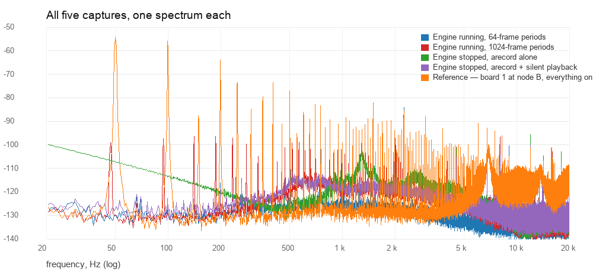
| the five captures |
|---|
| Engine running, 64-frame periods |
| Engine running, 1024-frame periods |
| Engine stopped, arecord alone |
| Engine stopped, arecord + silent playback |
| Reference — board 1 at node B, everything on mains |
The pedal's normal state: namchaind holds the codec, is muted, and the document in it is silent. This is what the player's audio path carries.
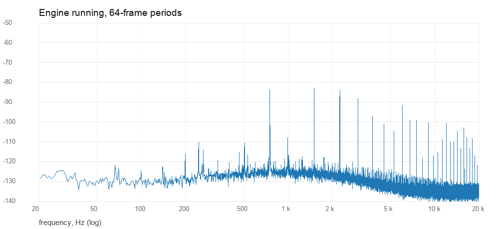
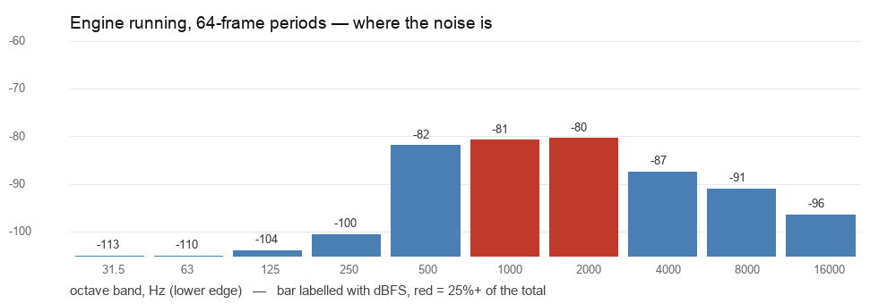
| band | level | share |
|---|---|---|
| 31.5–63 Hz | -113.3 dBFS | 0.0% |
| 63–125 Hz | -110.0 dBFS | 0.0% |
| 125–250 Hz | -103.9 dBFS | 0.2% |
| 250–500 Hz | -100.5 dBFS | 0.3% |
| 500–1000 Hz | -81.9 dBFS | 24.0% |
| 1000–2000 Hz | -80.8 dBFS | 31.1% |
| 2000–4000 Hz | -80.4 dBFS | 33.8% |
| 4000–8000 Hz | -87.4 dBFS | 6.8% |
| 8000–16000 Hz | -91.0 dBFS | 2.9% |
| 16000–20000 Hz | -96.4 dBFS | 0.9% |
The same, with period_size temporarily 1024 and the config restored afterwards. The period-rate comb moves from 750 Hz to 46.9 Hz and the floor drops 4.3 dB.
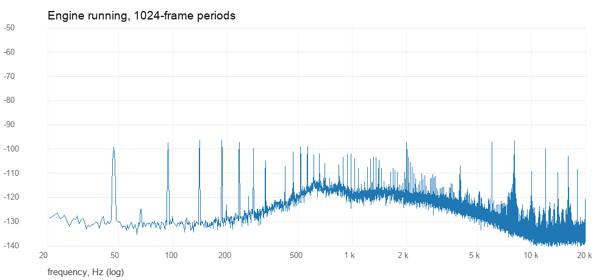
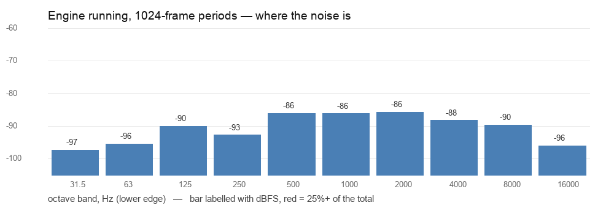
| band | level | share |
|---|---|---|
| 31.5–63 Hz | -97.4 dBFS | 1.5% |
| 63–125 Hz | -95.5 dBFS | 2.3% |
| 125–250 Hz | -90.0 dBFS | 8.1% |
| 250–500 Hz | -92.8 dBFS | 4.2% |
| 500–1000 Hz | -86.1 dBFS | 19.8% |
| 1000–2000 Hz | -86.2 dBFS | 19.7% |
| 2000–4000 Hz | -85.7 dBFS | 21.9% |
| 4000–8000 Hz | -88.3 dBFS | 11.9% |
| 8000–16000 Hz | -89.7 dBFS | 8.7% |
| 16000–20000 Hz | -96.0 dBFS | 2.0% |
No engine and no playback stream open: the converter in its capture-only state. The 4–16 kHz hiss is 15 dB louder here than with a playback stream open.
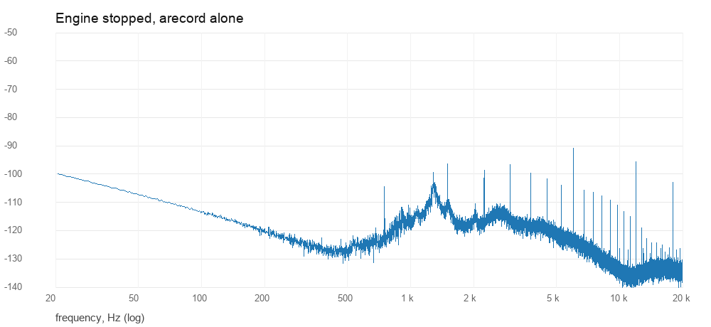
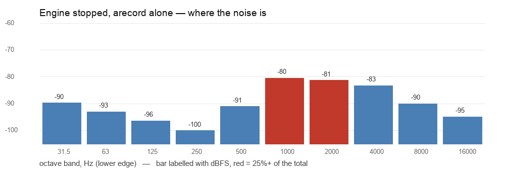
| band | level | share |
|---|---|---|
| 31.5–63 Hz | -89.8 dBFS | 4.0% |
| 63–125 Hz | -93.0 dBFS | 1.9% |
| 125–250 Hz | -96.4 dBFS | 0.9% |
| 250–500 Hz | -100.1 dBFS | 0.4% |
| 500–1000 Hz | -91.1 dBFS | 3.0% |
| 1000–2000 Hz | -80.5 dBFS | 34.0% |
| 2000–4000 Hz | -81.3 dBFS | 28.4% |
| 4000–8000 Hz | -83.3 dBFS | 18.0% |
| 8000–16000 Hz | -90.0 dBFS | 3.8% |
| 16000–20000 Hz | -94.9 dBFS | 1.2% |
No engine, but a silent aplay holds the playback path open — the codec state the engine leaves it in. The HF hiss is much lower; a drifting ~6.75 kHz line appears.
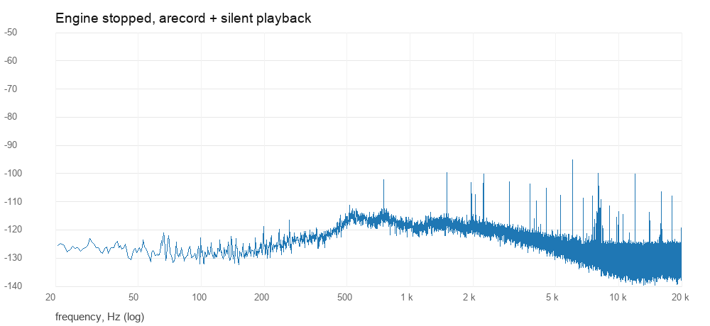
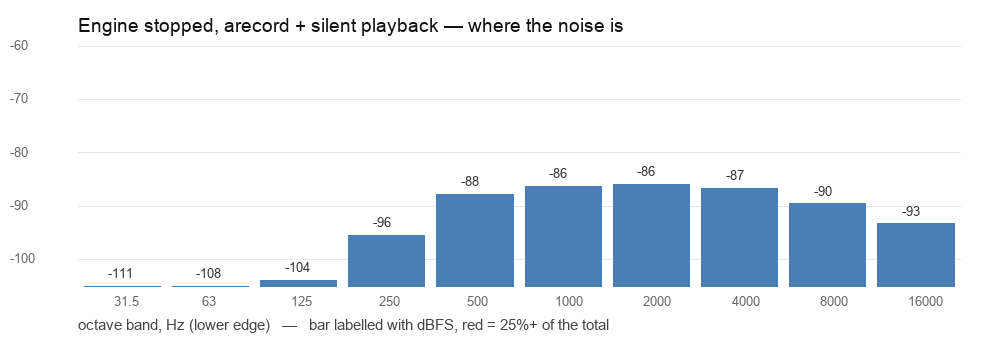
| band | level | share |
|---|---|---|
| 31.5–63 Hz | -110.6 dBFS | 0.1% |
| 63–125 Hz | -108.1 dBFS | 0.1% |
| 125–250 Hz | -103.9 dBFS | 0.4% |
| 250–500 Hz | -95.5 dBFS | 2.7% |
| 500–1000 Hz | -87.8 dBFS | 15.7% |
| 1000–2000 Hz | -86.3 dBFS | 22.2% |
| 2000–4000 Hz | -85.9 dBFS | 24.1% |
| 4000–8000 Hz | -86.7 dBFS | 20.0% |
| 8000–16000 Hz | -89.6 dBFS | 10.4% |
| 16000–20000 Hz | -93.3 dBFS | 4.4% |
Not a codec-and-Core measurement: this is the earlier capture with board 1's input node connected and every supply on mains, included so the hum can be seen and heard beside the hiss. 50 Hz and its harmonics, 25 dB above what the same node gives on batteries.
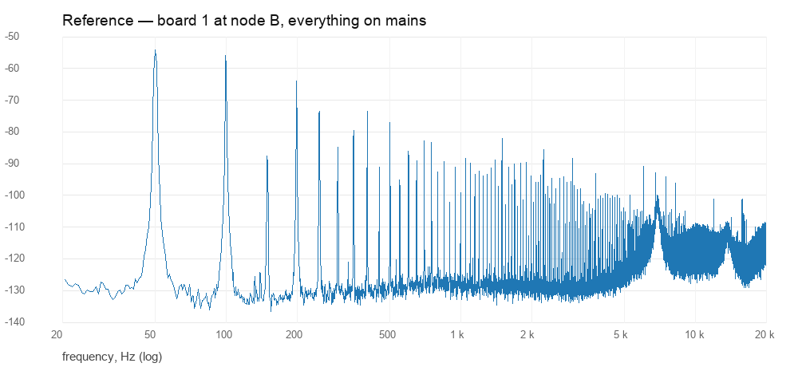
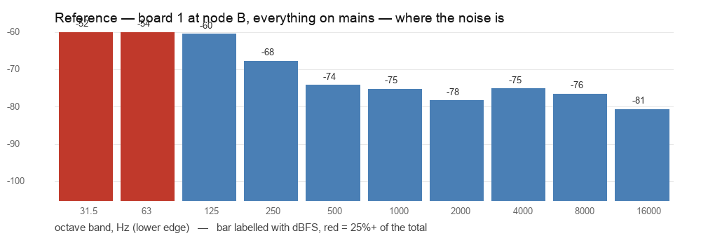
| band | level | share |
|---|---|---|
| 31.5–63 Hz | -52.3 dBFS | 53.6% |
| 63–125 Hz | -54.0 dBFS | 36.0% |
| 125–250 Hz | -60.5 dBFS | 8.0% |
| 250–500 Hz | -67.7 dBFS | 1.5% |
| 500–1000 Hz | -74.2 dBFS | 0.3% |
| 1000–2000 Hz | -75.2 dBFS | 0.3% |
| 2000–4000 Hz | -78.3 dBFS | 0.1% |
| 4000–8000 Hz | -75.1 dBFS | 0.3% |
| 8000–16000 Hz | -76.5 dBFS | 0.2% |
| 16000–20000 Hz | -80.7 dBFS | 0.1% |
arecord at the same 64-frame periods
shows the same 750 Hz line 18 dB lower, so the boundary is real and the engine's handling of
it is what is worse.